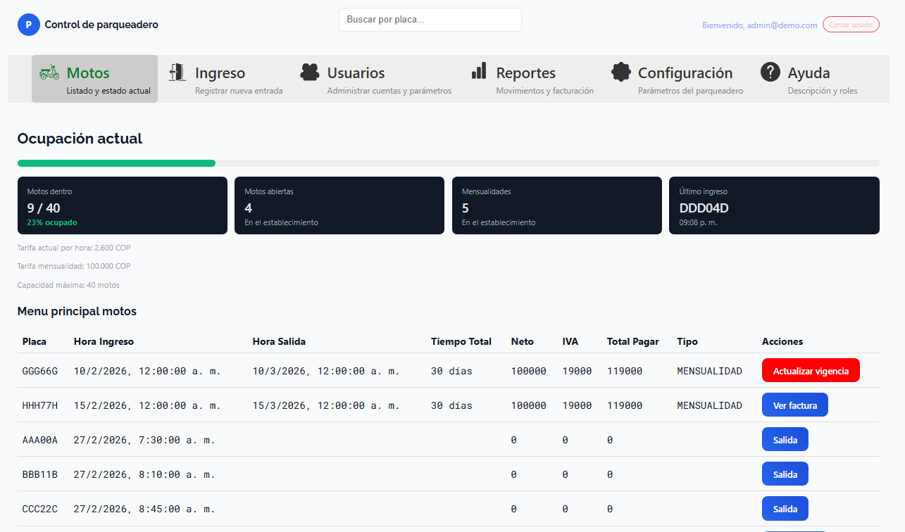
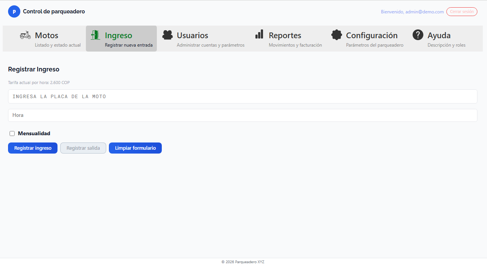
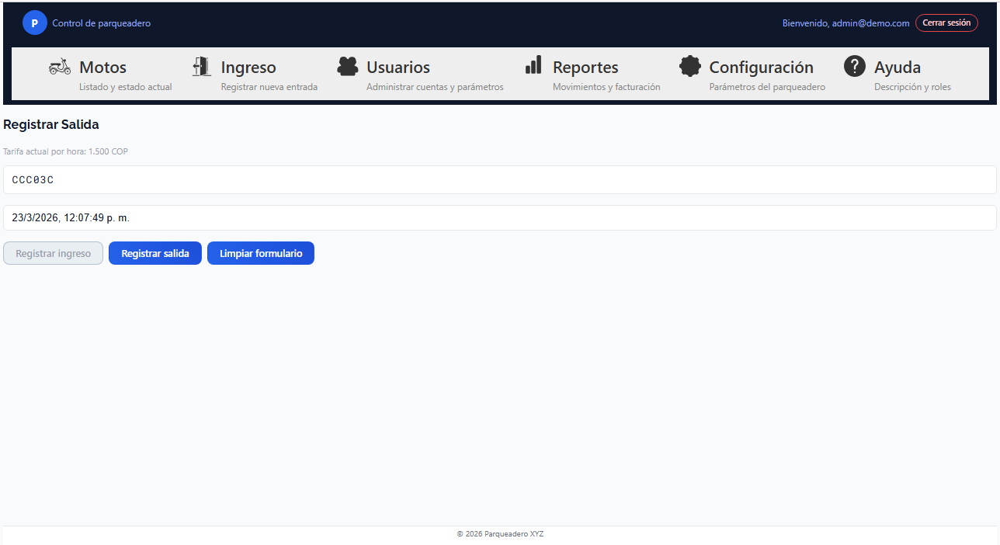
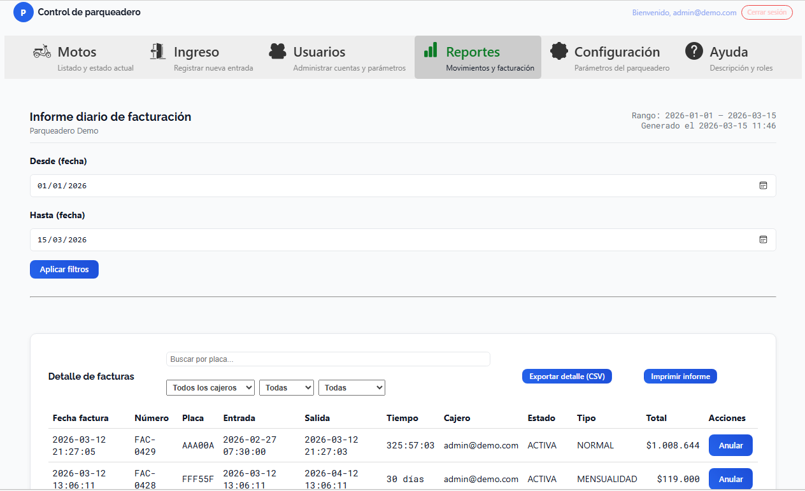
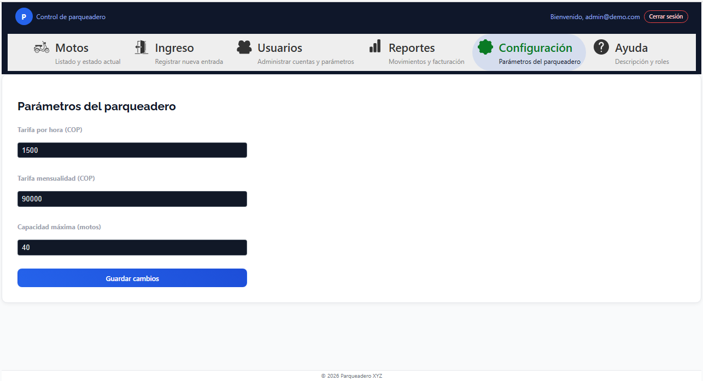
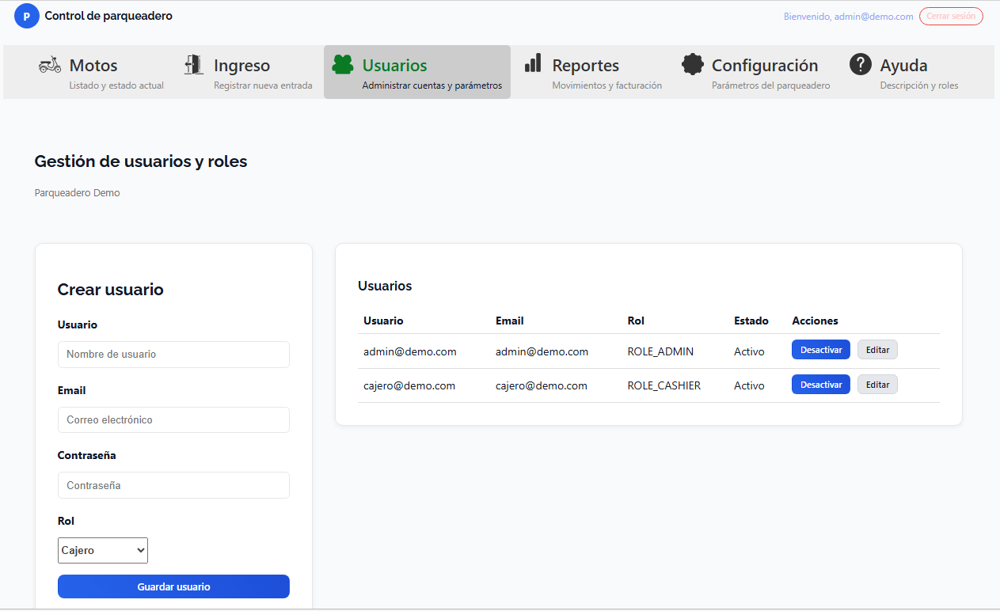

Sistema de gestión de parqueadero para motos Case Study
Contexto
Un parqueadero de motos necesitaba digitalizar el control de entradas, salidas y mensualidades. Hasta ese momento todo se llevaba en papel o en Excel, sin reportes claros ni un histórico confiable.
Problema
- Control manual de tickets y mensualidades.
- Sin forma rápida de saber cuánto se facturó en un día o periodo.
- Dificultad para reconciliar caja y movimientos al final del turno.
- Sin separación de permisos entre administración y cajeros.
Solución
Desarrollé una aplicación web que centraliza la operación del parqueadero:
- Frontend en React para la interfaz de cajeros y administradores.
- API backend en PHP conectada a una base de datos MySQL.
- Autenticación con JWT y manejo de roles (Administrador y Cajero).
Funcionalidades principales
- Registro de entrada y salida de motos con cálculo automático de la tarifa según tiempo de permanencia.
- Gestión de mensualidades: clientes recurrentes, fechas de vencimiento y pagos.
-
Emisión de tickets imprimibles desde el navegador, con
formato ajustado mediante CSS
@media print. - Reportes por rango de fechas, tipo de cobro (normal / mensualidad), cajero y estado del ticket.
- Módulo de usuarios y roles: creación, edición, desactivación y asignación de permisos.
- Pantalla de configuración: tarifas, franjas horarias y datos de la empresa.
Roles de usuario
Administrador
- Acceso a todos los módulos del sistema.
- Configura tarifas, parámetros del parqueadero y datos del negocio.
- Administra usuarios y roles.
- Consulta reportes detallados de movimientos e ingresos.
Operador / Cajero
- Registra entradas y salidas de motos.
- Gestiona mensualidades y cobros diarios.
- No puede modificar configuración ni usuarios.
- Ve solo lo necesario para su trabajo diario (listado y tickets).
Retos técnicos
-
Diseño de layout de impresión para tickets pequeños utilizando
@media print. - Manejo de sesiones con JWT y protección de rutas según rol en frontend y backend.
- Navegación responsive: header tipo barra superior en escritorio y barra inferior en móvil.
Resultados
- Control centralizado de entradas, salidas y mensualidades.
- Consulta rápida de la facturación por día y por rango de fechas.
- Reducción de errores manuales en el cálculo de tarifas y tickets.
- Base sólida para futuras integraciones con facturación electrónica.
Capturas






Stack técnico
Notas personales y uso de IA
Este proyecto no lo desarrollé en solitario: lo construí combinando mi experiencia como desarrollador con la ayuda de herramientas de Inteligencia Artificial.
La IA fue clave para tomar decisiones de arquitectura, depurar errores complejos, diseñar componentes reutilizables y documentar el sistema (README, casos de uso y esta misma página de servicios). Sin ese apoyo, con la información dispersa que hay en internet, me habría tomado mucho más tiempo llegar a una solución completa.
Para mí, la IA no reemplaza el trabajo del desarrollador, sino que se convierte en un copiloto que acelera el aprendizaje, permite explorar alternativas técnicas y ayuda a cerrar la brecha entre la idea y un producto funcional.
Enlaces
- Repositorio: (pendiente añadir enlace al repositorio)
- Demo / VPS: (pendiente añadir URL de demo)